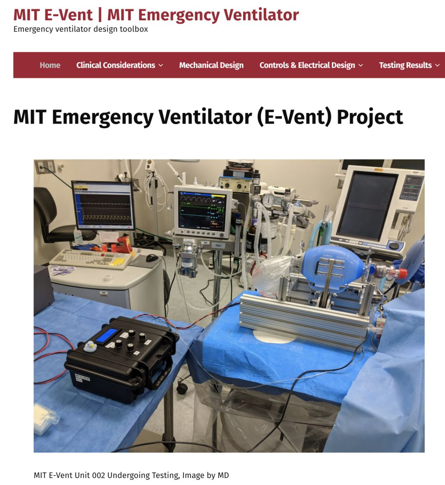
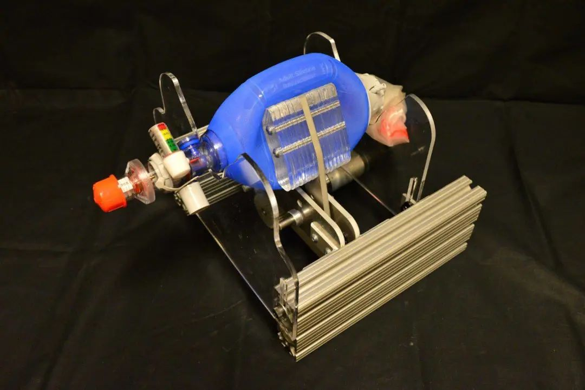

美国呼吸机紧缺！工业企业或转产救急，马斯克称特斯拉和SpaceX已开始呼吸机研发
原文链接 备份链接 单日新增确诊人数超过 5 千，累计确诊人数逼近 2 万，美国已经成为新冠肺炎疫情蔓延下的又一个巨大受害者。 中国、欧洲多国的经历已经表明，在疫情暴发、患者人数飞涨的情况下，几乎没有国家和地区能够躲过医疗资源紧缺的情况。 …

今晚19:00准时直播，扫码观看
来自 10 年前麻省理工学院（MIT）一群学生的课程创意，或将在正被新冠疫情摧残的美国派上大用场 — — 拯救生命。
如今的美国，正处于多事之秋：单日新增确诊病例数连续 3 天破万，累积确诊病例数已高达 69194 例。与中国以及意大利等欧洲国家一样，在疫情暴发初期，口罩供应不足、呼吸机短缺等医疗资源紧缺的问题，也让美国有点措手不及。

图｜美国单日新冠肺炎新增确诊数（来源：worldometers）
在新冠病毒患者治疗过程中，呼吸机是一个至关重要、甚至关乎生死的医疗设备，它可以确保患者在肺功能衰竭的情况下依然可以继续呼吸。短期内，呼吸机短缺正成为美国应对疫情的一大困境。仅在一周前，美国纽约州州长 Andrew Cuomo 在记者会上就表示，“纽约州目前需要 30000 台呼吸机，但现存只有 5000 至 6000 台。” 随着美国单日新增确诊病例数激增，呼吸机短缺问题将更加凸显。
此外，据美国约翰·霍普金斯大学健康安全中心估计，截至今年 2 月，美国仅有近 17 万台呼吸机可供患者使用，如果遇到像 1918 年全球性甲型 H1N1 流感那样严重的疫情，全国所需呼吸机数量可能高达 74 万台。

图｜本月早些时候，一名患者在接受了COVID-19（新型冠状病毒）检测后被送往美国休斯顿联合纪念医疗中心。（来源：美联社）
如今，美国各州州长拿着大把美元在国外（主要是中国）购买呼吸机，特斯拉、通用汽车、福特汽车和通用电气医疗等非医疗卫生相关企业，也已经在紧急动员，为制造呼吸机热身。
但是，美国能否指望这些公司来填补呼吸机的缺口，仍然存在很多不确定性，就算不考虑其中的资金投入和监管问题，从无到有地造出一台呼吸机也并非是一件容易的事情。
但是，一项来自 10 年前的呼吸机设计，或为赢得这场“战疫”增加了筹码。
3 月 24 日，据《麻省理工科技评论》报道，麻省理工学院的科研人员打算推出一种低成本的呼吸机开源设计，并希望那些拥有制造能力和医疗专业知识的企业可以加速生产关键医疗设备，从而帮助那些因新型冠状病毒肺炎而饱受呼吸系统疾病折磨的患者。
该团队甚至建立了一个网站，公布了麻省理工学院紧急呼吸机项目（简称 E-Vent）。研究人员表示，“仅在美国，新冠病毒肺炎大流行就可能造成 30 - 70万台呼吸机的短缺。几周内，这一问题可能就会在美国出现。传统呼吸机产量的增加很有可能跟不上实际需求，且这些呼吸机成本很高。” 当时据该团队估计，这种设备的成本约为 100 美元，而医院的一台标准版呼吸机的花费高达数万美元。

（来源：MIT E-Vent）
根据 E-Vent 网站上的描述，研究人员已与麻省理工学院的工程师和来自美国的临床医生，共同启动了一个紧急研究项目，探讨这种简易呼吸机的可行性。
在位于美国波士顿的一家研究机构内，研究人员在猪身上对 E-Vent 001 号装置进行了测试。除了设备人员（兽医、技术人员和研究人员），现场还包括急诊医学和麻醉医生，以及机械设计、制造、控制和电气工程师。通过与 Puritan Bennet 840 呼吸机对比，研究人员发现：之前的全激光切割设计存在缺陷，现已改为金属框架；通过实验，更准确地定义了与驱动系统功率需求相关的关键参数；研究了潜在的控制策略，确定了关键的 UI/UX 需求以及人为因素，也确定了当它与一个真正的肺和呼吸末正压（PEEP）环境下确定的关键压力。
研究人员表示，下一项研究将在类似的猪模型中对 E-Vent 002 号装置进行功能测试。

图 ｜ E-Vent 002 号装置（来源：MIT E-Vent）
该网站强调，这一设备只能在训练有素的专业医疗人员的监督下使用。虽然目前在各方面无法替代原有的重症监护室内的呼吸机，但 E-Vent 项目提供的简易呼吸机将有助于缓解当下的呼吸机供应压力，或者在缺少正常呼吸机的紧急情况下作为一个救命设备。
目前广泛使用的袋阀面罩属于人工呼吸机，救护人员多用其来帮助呼吸有困难的病人。随着冠状病毒患病人数持续增加，袋阀面罩供不应求的恐慌不断蔓延，越来越多的工程师、医学生和业余爱好者试图去为无安全和质量保障的临时医疗设备构建或共享设计规格，而这种能够自动压缩（储气袋）的机动呼吸机有望由此真正问世。
如果该呼吸机确实可以帮助新冠病毒肺炎患者，我们期待他们进一步公开发布设计、测试结果和相关医疗信息，从而让那些具备所需制造能力和专业知识的公司能够生产出可靠、安全、经济的呼吸机。
10 年前的课程设计

这一项目可以追溯至 10 年前，当时参加麻省理工学院精密机械设计课程的一群学生与波士顿大学医学中心的 Jussi Saukkonen 合作，研发了一台原型样机。他们也发表了一篇有关该设备的论文，但这一想法从未推至实际生产的层面。

他们最初的设计主要是面向发展中国家的农村地区，这些地区存在着严重的慢性呼吸问题，但却很少有机会使用机械呼吸机。不过，他们当时也指出，如果出现像现在这样大规模蔓延的流行病，这种机器在美国这种发达国家也能发挥重要的作用。

图 ｜ 10 年前由麻省理工学院学生设计的呼吸机原型样机（来源：MIT News）
根据论文内的描述，原型呼吸机可以测量“患者”的呼吸速率和潮气量（平静呼吸时每次吸入或呼出的气量），具有辅助控制和超压报警功能，且运行功率很低（一次充电可以运行 3.5 小时）。
不仅如此，它还非常便捷，尺寸仅为 285 x 170 x 200（mm），只有 4.1 公斤重。但论文作者表示，由于动力不足，当时的原型机不能调节吸气和呼气的比例，他们将继续研究改变电机对成本、重量和电池寿命的影响。
如今，在新冠病毒肺炎疫情下，当年的团队再次聚集起来，他们参考了之前的初版设计，并进行了一些优化，以确保其他人可以更加容易去制造和使用该设备。
论文的第一作者，如今任职于美国国家航空航天局埃姆斯研究中心（NASA Ames Research Center）的 Abdul Mohsen Z. Al-Husseini III 在个人 Facebook 上表示，在新冠病毒肺炎疫情下，本来可以避免的死亡会由于呼吸机设备的缺乏而发生。
“世界各地的人们对这个设备产生了浓烈的兴趣。因此，麻省理工学院的团队重新召集了起来，并正努力在新冠病毒肺炎患者的临床病理的特定背景下审查和修改设计。我们希望在未来几天内，开源发布一个更新的可扩展设计，并由医生进行同行审查，以确保生产的安全性。” Abdul Mohsen Z. Al-Husseini III 说。

（来源：Facebook）
目前，他们已经将该设备提交给美国食品药品监督管理局（FDA），并在 “紧急使用许可” 通道下申请快速审核。
FDA开启“绿灯”
为了尽可能扩大呼吸机供应，美国 FDA 本周在官网更新了关于呼吸机的指导文件，从法规层面放松了对呼吸机生产的管制，尽可能扩大生产。
该文件给呼吸机制造商提供了很多在机器设计、材料和工艺上的灵活性。FDA 认为，这种方式将有助于制造商顺利增加呼吸机或是在更多的地方开始制造呼吸机。
美国卫生和公共服务部部长 Alex Aza 在一份声明中表示，在 FDA 的推动下，医疗设备制造商可以更容易对现有产品进行调整，比如在不需要审批的情况下更换供应商或者材料，以解决当下可能遇到的供应商、原材料紧缺问题。
同时其他制造商，如车企，也可以快速地改变原有生产线地用途，投入到呼吸机的生产当中。
另一方面，该指南也涉及到了呼吸机的销售环节，允许他们绕过部分原有的程序，更加灵活地将呼吸机交付到医院。
此外，FDA 在文件中也指出，当前呼吸机的产量提升可能也无法满足美国所有医院对呼吸机的需求，而为了解决这一问题，FDA 授权医护人士在救治过程中使用其他能够提供呼吸帮助的替代设备，比如麻醉使用的麻醉机等。
只要能帮上忙，医院和医疗设备供应商都能使用现有的各种机器充当呼吸机。美国卫生与公众服务部和FDA传递出来的信息很明确：如果你想帮助扩大呼吸机生产工作，在疫情期间挽救更多人的性命，两个官方机构将一起合作尽可能扫除所有障碍。
而这一信息，或许能加速 E-Vent 项目通过 FDA 审核的速度。
-End-
参考：
http://news.mit.edu/2010/itw-ventilator-0715
https://web.mit.edu/2.75/projects/DMD_2010_Al_Husseini.pdf

原文链接 备份链接 单日新增确诊人数超过 5 千，累计确诊人数逼近 2 万，美国已经成为新冠肺炎疫情蔓延下的又一个巨大受害者。 中国、欧洲多国的经历已经表明，在疫情暴发、患者人数飞涨的情况下，几乎没有国家和地区能够躲过医疗资源紧缺的情况。 …
原文链接 备份链接 面对这场大流行 美国开始“自下而上”发动一切力量来抗疫 3月19日，美国总统特朗普 （前右） 在华盛顿联邦紧急措施署总部参加电话会议。 “醒了”的美国正在发生什么 本刊记者/彭丹妮 *发于2020.3.30总第941 …
原文链接 备份链接 今晚19:00准时直播，扫码观看 美国时间 3 月 25 日，吉利德公司发布声明称，已经向美国 FDA 申请撤销瑞德西韦孤儿药的认证，并承诺将放弃孤儿药附带的利益。 翻转太快。就在 3 月 23 日，FDA 刚刚授予瑞 …
原文链接 备份链接 全球性危机的解决 只有全球合作才能解决 点击图片，一键下单 「*全球抗疫 惟有合作*」 记者 | 刘周岩 郜超 实习记者 | 张佳婧 在意大利刚刚“封国”的那段时间，喜爱歌舞的意大利人将他们平日里的露天音乐会搬到阳 …
原文链接 备份链接 美国可能会成为新冠病毒全球大流行的下一个“震中”。 疫情快速蔓延让美国各大学感受到了巨大的健康威胁和经济寒意，美国高等教育可能因此发生巨大改变 文 |《财经》特派记者 金焱 发自华盛顿 编辑 | 苏琦 美国新冠病毒疫 …